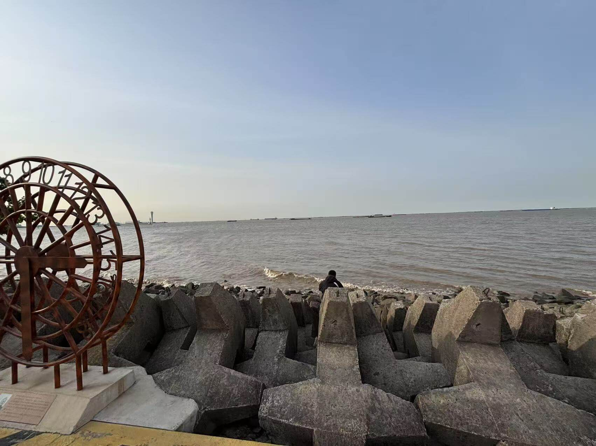

The fourth day in Shanghai. None of us really wanted to admit it — but this was our last day to have fun in the city.
Around noon, we started discussing where to go. Yuxi suggested visiting a beach next to the Yangtze River, one of the two longest rivers in China. He wanted to see the place where the river flows into the sea. But Eric wasn’t very interested — he thought the Yangtze River in Shanghai wasn’t that impressive and, besides, it was way too far from our hotel. So in the end, Yuxi went alone from his sister’s place.
The weather was sunny and beautiful. Yuxi took some photos of the sea and shared them with us. I’ve always loved the sea and the ocean, especially on sunny days when the water sparkles bo guang lin lin (波光粼粼) — a traditional Chinese idiom that describes how sunlight reflects off rippling waves like shimmering fish scales.

Living in an inland city, I rarely get the chance to see the sea. That kind of scene feels like a dreamland to me. Honestly, I felt a little regretful for not going with him.
Later in the afternoon, Eric and I decided to visit Apple Jing’an, the largest Apple Store in Asia — and the second-largest in the world.
Apple Jing’an is next to Jing’an Temple, a traditional temple in Jing’an District. The combination of traditional and modern technology feels quite amazing.
Later we went to Blue Frog, a western foods restaurant. And had our the most expensive dinner in Shanghai 😂. I had a burger and SPAGHETTI! My favorite western food ever!
By the way, just water inside. We are good kids 😉.
After dinner, we went for a leisurely bike ride, wandering aimlessly through old Shanghai. And almost every road has a dedicated bike lane in Shanghai, specially for bikes and e-bikes. You can fully immerse yourself in the joy of cycling without worries.
Yuxi’s flight is at 7 AM tomorrow morning, which means he needs to get up around 4. So he went back early at around 10 PM. Eric and I saw him off at the subway station and said our goodbyes. A feeling of reluctance welled up in my heart, because this farewell means the next time we meet will no longer be in Shanghai.
Tomorrow is the last day… and I don’t even have time to take another look at the city since my flight is at noon. Kinda sad.
About this Post
This post is licensed under CC BY-NC 4.0.